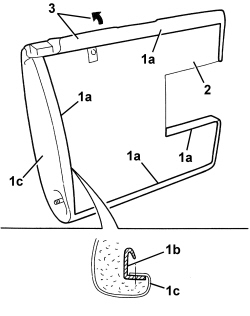
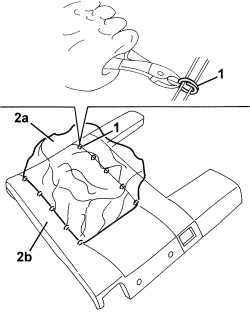
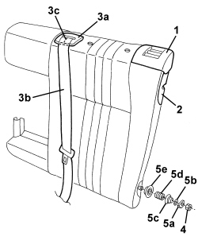
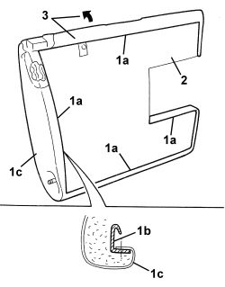

7050D35 LEFT REAR SEAT BACKREST COVER (TWO SEATER) - R.R. WITH BACKREST REMOVED
- Path
- Procedures > 70 FITTINGS > 7050 REAR SEATS > 7050D REAR SEAT TRIM/PADDING > 7050D35 LEFT REAR SEAT BACKREST COVER (TWO SEATER) - R.R. WITH BACKREST REMOVED
- Kind
- repair procedure (removal / refitting; the operation number is the code)
- Applies to
- all engines; all production periods
- Interactive page
- https://sloeber94.github.io/elrnDB/#/939004846
Applies to: all engines; all production periods
 Removing
Removing
 Refitting
RefittingOp. 7050B12 REAR SEAT HEAD RESTRAINT - R.R.
Op. 7050B08 GUIDE BUSH FOR HEAD RESTRAINT (ONE) FOR REAR SEAT - R.R
Op. 7050B18 REAR SEAT ARMREST - R+R
Op. 7050A78 SKI FLAP IN REAR SEAT BACKREST - R.R.
1. Remove the trim for the release lever, releasing the inner retainers.
2. Remove the trim (2a) for the seat belt, releasing the inner retainers. Release the trim (2a) from the seat belt (2b) using the slit (2c).
3. Undo the nut.
4. Keep the attachment plate (4a), the washer (4b), the washer (4c), the spring (4d) and the trim (4e).

Applies to: all engines; all production periods
1. Release the trim (1c) retaining profiles (1b) along the entire perimeter (1a).
2. Remove the rear trim.
3. Release the cover from the upholstery along the entire perimeter of the backrest.

Applies to: all engines; all production periods
1. If necessary, fold the cover and upholstery over and cut all the backrest front retainers using cutters.
2. Separate the backrest trim (2a) from the padding (2b).

Applies to: all engines; all production periods
Refitting
Removing- Check that the backrest trim is not damaged.
- If separated, position the backrest trim on the padding and crimp the retainers using special pliers.
- Fit the trim on the padding along the entire perimeter of the backrest.
- Position the rear cover.
- Attach the cover retaining profiles along the entire perimeter.
1. Refit the trim (1a), the spring (1b), the washer (1c), the washer (1d), the attachment plate (1e) and tighten the nut (1f) to the end of travel position.
2. Attach the seat belt (2a) in the trim (2b) passing it through the slit (2c). Fit the trim (2b) in position and attach the inner retainers.
3. Fit the trim for the release lever in position and attach the inner retainers.

Applies to: all engines; all production periods
Op. 7050A78 SKI FLAP IN REAR SEAT BACKREST - R.R.
Op. 7050B18 REAR SEAT ARMREST - R+R
Op. 7050B08 GUIDE BUSH FOR HEAD RESTRAINT (ONE) FOR REAR SEAT - R.R
Applies to: all engines; all production periods; only with equipment: Station Wagon
Removing
RefittingOp. 7050B12 REAR SEAT HEAD RESTRAINT - R.R.
- Remove all the bushes.
Op. 7050B08 GUIDE BUSH FOR HEAD RESTRAINT (ONE) FOR REAR SEAT - R.R
Op. 7050B18 REAR SEAT ARMREST - R+R
Op. 7050A78 SKI FLAP IN REAR SEAT BACKREST - R.R.
1. Remove the trim for the release lever, releasing the inner retainers.
2. Remove the retainer trim, releasing the inner retainers.
3. Remove the trim (3a) for the seat belt, releasing the inner retainers. Release the trim (3a) from the seat belt (3b) using the slit (3c).
4. Undo the nut.
5. Keep the attachment plate (5a), the washer (5b), the washer (5c), the spring (5d) and the trim (5e).

Applies to: all engines; all production periods; only with equipment: Station Wagon
1. Release the trim (1c) retaining profiles (1b) along the entire perimeter (1a).
2. Remove the rear trim.
3. Release the cover from the upholstery along the entire perimeter of the backrest.

Applies to: all engines; all production periods; only with equipment: Station Wagon
1. If necessary, fold the cover and upholstery over and cut all the backrest front retainers using cutters.
2. Separate the backrest trim (2a) from the padding (2b).

Applies to: all engines; all production periods; only with equipment: Station Wagon
Refitting
Removing- Check that the backrest trim is not damaged.
- If separated, position the backrest trim on the padding and crimp the retainers using special pliers.
- Fit the trim on the padding along the entire perimeter of the backrest.
- Position the rear cover.
- Attach the cover retaining profiles along the entire perimeter.
1. Refit the trim (1a), the spring (1b), the washer (1c), the washer (1d), the attachment plate (1e) and tighten the nut (1f) to the end of travel position.
2. Attach the seat belt (2a) to the trim (2b) passing it through the slit (2c).
Place the trim (2b) in position and attach the inner retainers.
3. Place the retainer trim in position and attach the inner retainers.
4. Fit the trim for the release lever in position and attach the inner retainers.

Applies to: all engines; all production periods; only with equipment: Station Wagon
Op. 7050A78 SKI FLAP IN REAR SEAT BACKREST - R.R.
Op. 7050B18 REAR SEAT ARMREST - R+R
Op. 7050B08 GUIDE BUSH FOR HEAD RESTRAINT (ONE) FOR REAR SEAT - R.R
Topics linked from this page (4)
- 7050A78 SKI FLAP IN REAR SEAT BACKREST - R.R.
- 7050B08 GUIDE BUSH FOR HEAD RESTRAINT (ONE) FOR REAR SEAT - R.R
- 7050B12 REAR SEAT HEAD RESTRAINT - R.R.
- 7050B18 REAR SEAT ARMREST - R+R